Целью данной работы является приобретение практических навыков по установке и конфигурированию DNS-сервера, усвоение принципов работы системы доменных имён.
Загрузим нашу операционную систему и перейдем в рабочий каталог с проектом (рис. @fig-1):
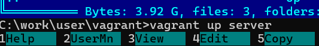
Далее запустим виртуальную машину server (рис. @fig-2):
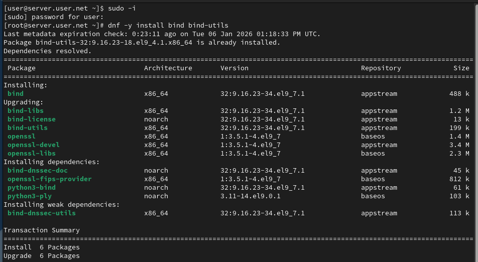
На виртуальной машине server войдём под созданным нами в предыдущей работе пользователем и откроем терминал. Перейдём в режим суперпользователя и установим bind и bind-utils (рис. @fig-3):
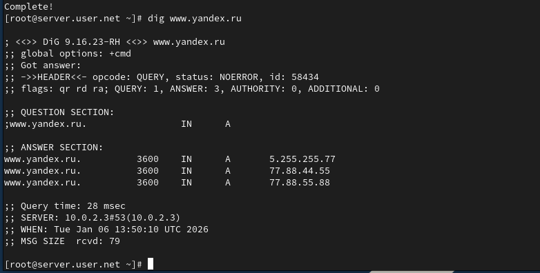
С помощью утилиты dig сделаем запрос к DNS-адресу www.yandex.ru (рис. @fig-4):
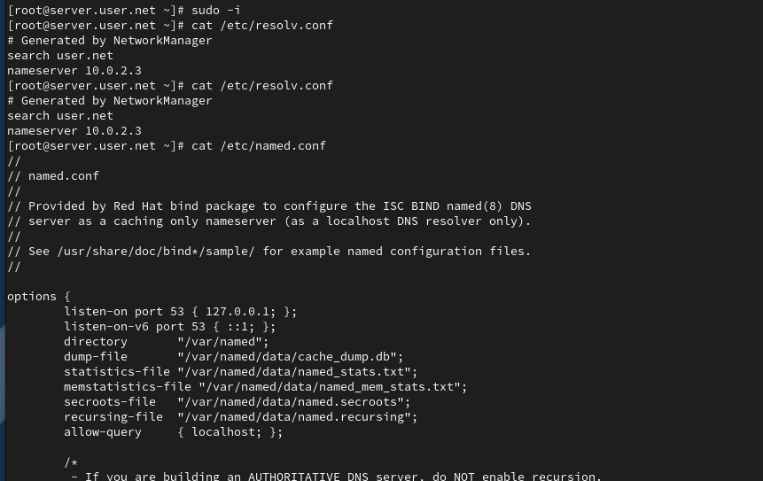
Просмотрим содержание основных конфигурационных файлов DNS (рис. @fig-5, @fig-6, @fig-7, @fig-8, @fig-9):
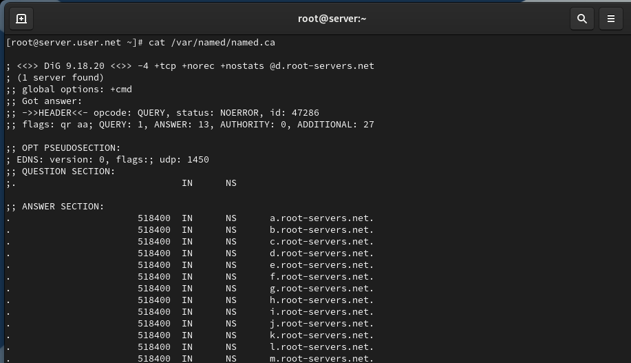
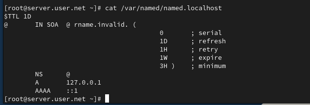
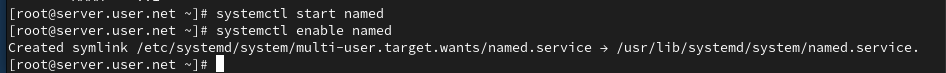
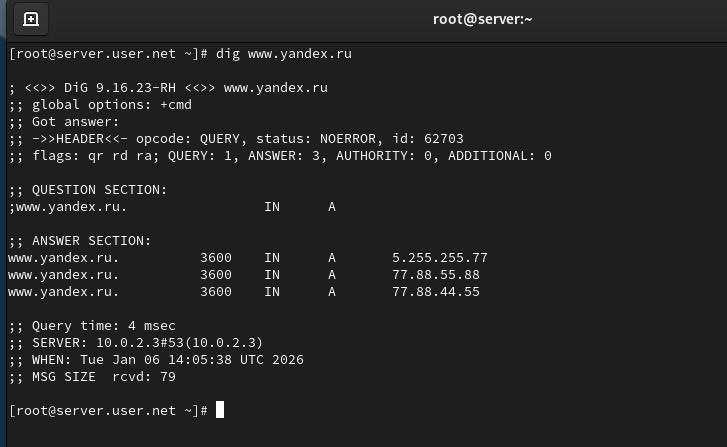
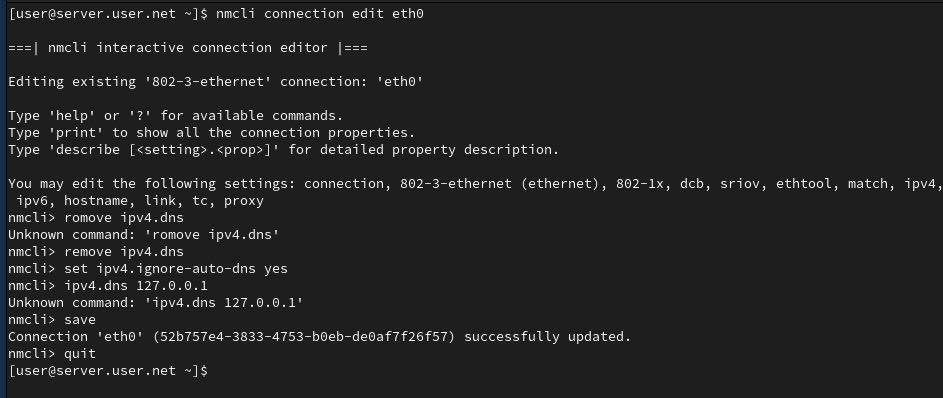
Запустим DNS-сервер и включим его в автозагрузку (рис. @fig-10):
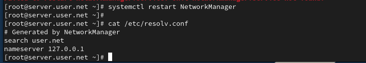
Проанализируем отличие в выведенной на экран информации при выполнении команд (рис. @fig-11):
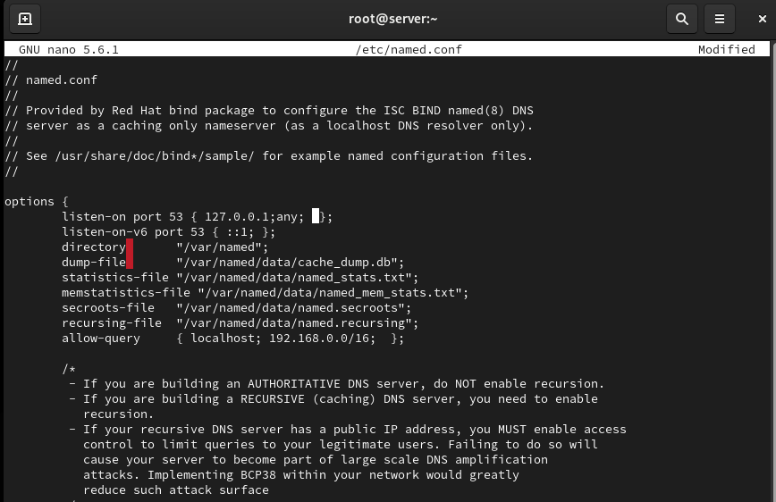
Сделаем DNS-сервер сервером по умолчанию для хоста server и внутренней виртуальной сети. Для этого изменим настройки сетевого соединения eth0 в NetworkManager (рис. @fig-12):
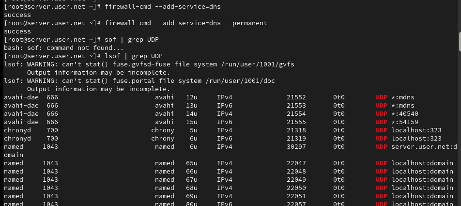
Повторим действия для соединения System eth0 (рис. @fig-13):
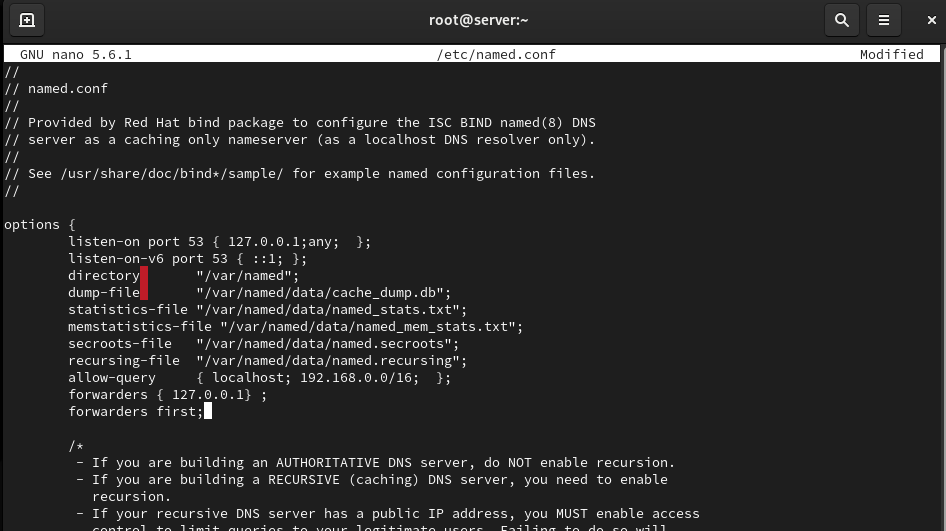
Перезапустим NetworkManager и проверим наличие изменений в файле /etc/resolv.conf (рис. @fig-14):
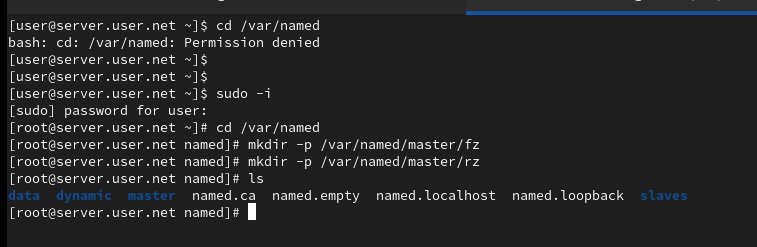
Внесём изменения в файл /etc/named.conf для настройки направления DNS-запросов (рис. @fig-15):
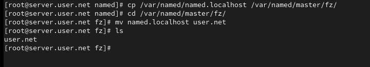
Внесём изменения в настройки межсетевого экрана узла server, разрешив работу с DNS (рис. @fig-16):
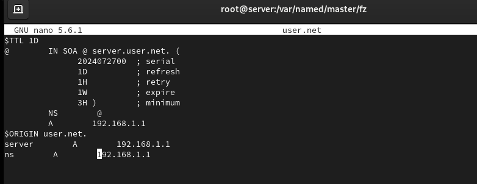
Добавим перенаправление DNS-запросов на вышестоящий DNS-сервер и отключим DNSSEC при необходимости (рис. @fig-17):
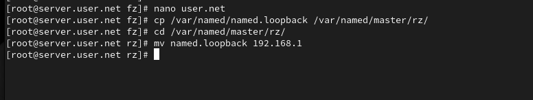
Откроем файл /etc/named/user.net и пропишем прямую и обратную зоны (рис. @fig-18):
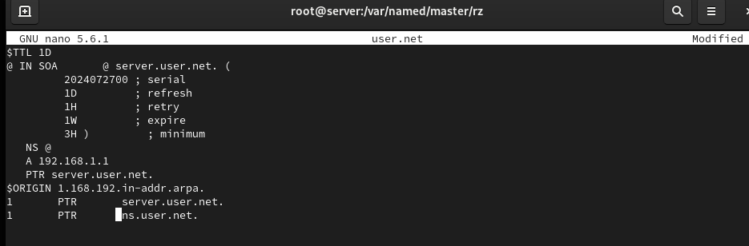
Создадим подкаталоги для файлов зон (рис. @fig-19):
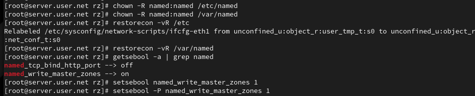
Скопируем шаблон прямой DNS-зоны и переименуем его (рис. @fig-20):
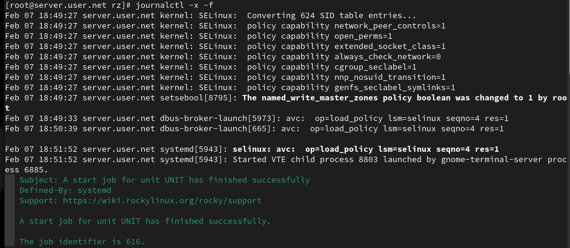
Отредактируем файл прямой зоны (рис. @fig-21):
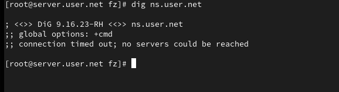
Скопируем шаблон обратной DNS-зоны и переименуем его (рис. @fig-22):
Отредактируем файл обратной зоны (рис. @fig-23):
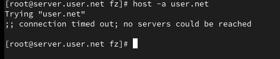
Исправим права доступа к файлам и восстановим метки SELinux (рис. @fig-24):
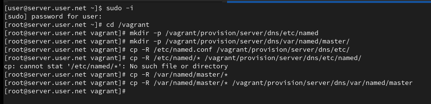
Запустим мониторинг системных сообщений (рис. @fig-25):
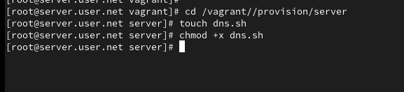
В ходе выполнения лабораторной работы были приобретены практические навыки по установке и конфигурированию DNS-сервера, а также усвоены принципы работы системы доменных имён.
Что такое DNS?
Это система, предназначенная для преобразования человекочитаемых
доменных имен в IP-адреса, используемые компьютерами для идентификации
друг друга в сети.
Каково назначение кэширующего DNS-сервера?
Его задача - хранить результаты предыдущих DNS-запросов в памяти. Когда
клиент делает запрос, кэширующий DNS проверяет свой кэш, и если он
содержит соответствующую информацию, сервер возвращает ее без
необходимости обращаться к другим DNS-серверам. Это ускоряет процесс
запроса.
Чем отличается прямая DNS-зона от
обратной?
Прямая зона преобразует доменные имена в IP-адреса, обратная зона
выполняет обратное: преобразует IP-адреса в доменные имена.
В каких каталогах и файлах располагаются настройки
DNS-сервера? Кратко охарактеризуйте, за что они отвечают.
В Linux-системах обычно используется файл /etc/named.conf для общих
настроек. Зоны хранятся в файлах в каталоге /var/named/, например,
/var/named/example.com.zone.
Что указывается в файле resolv.conf?
Содержит информацию о DNS-серверах, используемых системой, а также о
параметрах конфигурации.
Какие типы записи описания ресурсов есть в DNS и для чего
они используются?
A (IPv4-адрес), AAAA (IPv6-адрес), CNAME (каноническое имя), MX
(почтовый сервер), NS (имя сервера), PTR (обратная запись), SOA
(начальная запись зоны), TXT (текстовая информация).
Для чего используется домен in-addr.arpa?
Используется для обратного маппинга IP-адресов в доменные
имена.
Для чего нужен демон named?
Это DNS-сервер, реализация BIND (Berkeley Internet Name
Domain).
В чём заключаются основные функции slave-сервера и
master-сервера?
Master-сервер хранит оригинальные записи зоны, slave-серверы получают
копии данных от master-сервера.
Какие параметры отвечают за время обновления
зоны?
refresh, retry, expire, и minimum.
Как обеспечить защиту зоны от скачивания и
просмотра?
Это может включать в себя использование TSIG (Transaction SIGnatures)
для аутентификации между серверами.
Какая запись RR применяется при создании почтовых
серверов?
MX (Mail Exchange).
Как протестировать работу сервера доменных
имён?
Используйте команды nslookup, dig, или host.
Как запустить, перезапустить или остановить какую-либо
службу в системе?
systemctl start|stop|restart
Как посмотреть отладочную информацию при запуске
какого-либо сервиса или службы?
Используйте опции, такие как -d или -v при запуске службы.
Где хранится отладочная информация по работе системы и
служб? Как её посмотреть?
В системных журналах, доступных через journalctl.
Как посмотреть, какие файлы использует в своей работе тот
или иной процесс? Приведите несколько примеров.
lsof -p
Приведите несколько примеров по изменению сетевого
соединения при помощи командного интерфейса nmcli.
Примеры включают nmcli connection up|down
Что такое SELinux?
Это мандатный контроль доступа для ядра Linux.
Что такое контекст (метка) SELinux?
Метка, определяющая, какие ресурсы могут быть доступны процессу или
объекту.
Как восстановить контекст SELinux после внесения
изменений в конфигурационные файлы?
restorecon -Rv
Как создать разрешающие правила политики SELinux из
файлов журналов, содержащих сообщения о запрете операций?
Используйте audit2allow.
Что такое булевый переключатель в SELinux?
Это параметр, который включает или отключает определенные аспекты защиты
SELinux.
Как посмотреть список переключателей SELinux и их
состояние?
getsebool -a.
Как изменить значение переключателя
SELinux?
setsebool -P